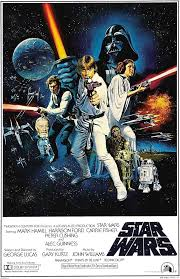

What inspires me about Gambino is his artistic vision. Initially, I listened to his album "Because the Internet." Eventually, I branched to other areas of his work with shows like Atlanta and Community. He isn't afraid to experiment anbd explore new things, which is something I admire and strive to become.
Kendrick Lamar

What inspires me about Kendrick is his transparency and attentino to detail. I've always enjoyed his music, but the more I lsten and examine the lyrics, the easier it is to resonate with him. He speaks about growing up in Compton, surrounded by the influences of gang culture, racism, and violence.
